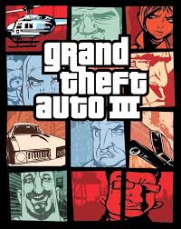
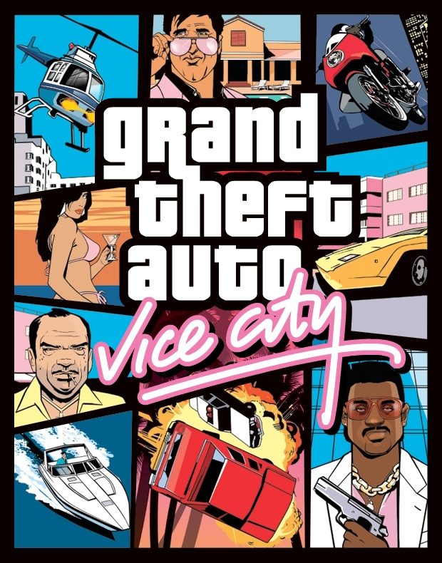

Grand Theft Auto III
Grand Theft Auto III is a third-person action-adventure game released in October 2001 and is the first game in the series to feature gameplay in the third-person, over the shoulder viewpoint. It is also the fifth title in the series and follow-up to Grand Theft Auto 2 but does not follow the storyline setup in GTA 2. The game enhances upon the open world nature of the game's story allowing players to traverse the city and complete missions at their leisure in a non-linear fashion. Missions can be categorized as either story-based missions or side missions with players being able to complete them in virtually any order. GTA 3 also marks the return to Liberty City, one of the three main cities of the Grand Theft Auto world that was first introduced in Grand Theft Auto 1. Players take on the role of Claude, a criminal who is shot by his girlfriend during a bank robbery and subsequently arrested by police, convicted, and sentenced to jail. However, upon transfer to jail Claude and another prisoner escape and make their way to a safe house where he is introduced to a crime boss and thus begins his quest for vengeance.
In addition to introducing the main character with a story rich background, Grand Theft Auto 3 was also the first game in the series built using a 3D game engine and it quickly became the best-selling video game for 2001 and was praised by fans and critics alike despite some backlash surrounding the game's violent gameplay and story. The gameplay of combining a third-person shooter and driving simulation in an open world found in Grand Theft Auto III was not a new concept but it did popularize this gameplay which has been used in all the GTA games since as well as many other non-GTA games. Much like the previous titles, as the player advances levels by completing missions and committing crimes his "wanted" level will increase which triggers different levels of law enforcement who start to pursue them.
Grand Theft Auto III is still popular today and is available from most PC game digital download services, there is also a full list of cheats, codes, and walkthroughs available, those having difficulty getting past a certain mission are encouraged to try them out. GTA 3 contains only a single player mode and was originally released for Microsoft Windows-based PCs, Xbox and PlayStation consoles, it has since been released for Mac OS, Android, and iOS platforms.
Grand Theft Auto: Vice City
Grand Theft: Vice City is the sixth game in the Grand Theft Auto series of open world action/adventure games and is the second title in the GTA III era of games that contain characters, settings, and storyline that all interconnect across the games. Vice City is set in the year 1986 in the fictional city known as Vice City which is based in Miami, FL. In it players take on the role of a Mafia hitman named Tommy Vercetti who like Claude from Grand Theft Auto III is on a quest for revenge after a drug deal he was involved with has gone wrong. Also like its predecessor, GTA: Vice City was praised by fans and critics while receiving some backlash from many special interest groups for its violent gameplay. It was also the best-selling game of 2002 and is one of the top-selling video games of all time.
The overall gameplay and graphics in Grand Theft Auto: Vice City are nearly identical to that of GTA III, players have the freedom to travel around Vice City, completing story based and side missions at their leisure. As the story progresses and players, complete missions different areas of the city become unlocked making a new story based and side missions available. The timeline for GTA: Vice City is set some 15 years prior to the events of GTA III and it includes some of the same nonplayable characters during an earlier period in their life. GTA: Vice City more than 100 different vehicle types most of which are drivable by players, which is nearly double the number of vehicles featured in GTA III it also includes new vehicles of helicopter and motorcycles.
Grand Theft Auto: Vice City is available from various PC game download services and has a full array of cheats, walkthroughs, and secrets available to assist players in finishing the game or provide extra fun for those that may have completed the game.
Grand Theft Auto: San Andreas

Grand Theft Auto: San Andreas is the seventh title in the Grand Theft Auto series of games and the largest game world of the three titles that are part of the GTA III era of games. The game is set in the state of San Andreas which is loosely based on the states of California and Nevada with most of the gameplay action taking place across three cities, Los Santos, San Fierro and Las Venturas which are based in Los Angeles, San Francisco, and Las Vegas respectively. The timeline of GTA: San Andreas takes place 1992 with players taking on the role of Carl "CJ" Johnson who has just returned to Los Santos after five years in Liberty City where he is implicated in a murder by a corrupt police officer named Frank Tenpenny. They are then forced to complete missions for the corrupt police officers in hopes that they will not frame him for murder.
GTA: San Andreas open world sandbox style gameplay is mostly unchanged compared to previous GTA games, the game world itself is much bigger than previous games. Players can use nearly any means available for travel and there is also a wide array of weapons and items available for use. The game also includes a wide variety of story-based and side missions including new mission types such as burglary, pimping, and more. The game also introduced RPG style elements to the game allowing players to customize the appearance of the main character which has an impact on the reactions of non-player characters. Players must also ensure that their character stays healthy be eating properly and exercising as this will have an impact on physical attributes and activities the players can perform in the game.
Grand Theft Auto: San Andreas, like most games in the series, was critically acclaimed and the number one selling game of 2004. but not without controversy. The controversy surrounding GTA: San Andreas was considerably greater than previous titles due to sexually explicit content that was unlockable through a fan made a mod called the Hot Coffee Mod. The existence of this content caused a huge uproar from special interest groups and government officials alike and caused the Entertainment Ratings Safety Board to change the rating of GTA: San Andreas from Mature to AO for Adults Only. This subsequently led to major retailers suspending sales of the game and pulling it from store shelves. Rockstar Games and Take-Two Interactive responded quickly, by releasing a "Cold Coffee" patch that disabled this content. The content was then removed from the game's source code and re-released after the M rating was re-instated. Without this content Grand Theft Auto: San Andreas still contains a number of cheats and secret content that can be unlocked.

© GTAGamelaunch 2017